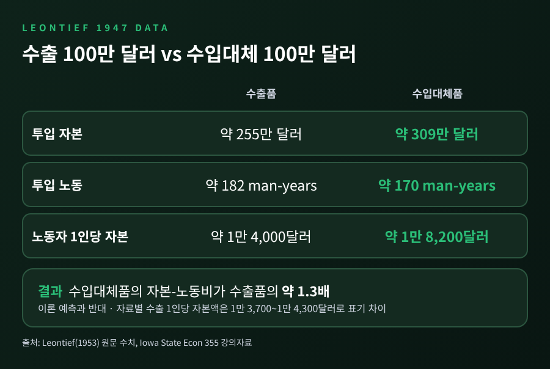
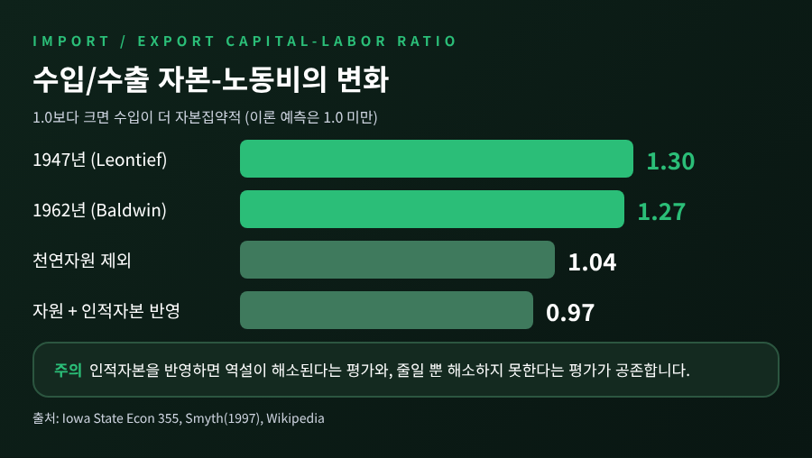
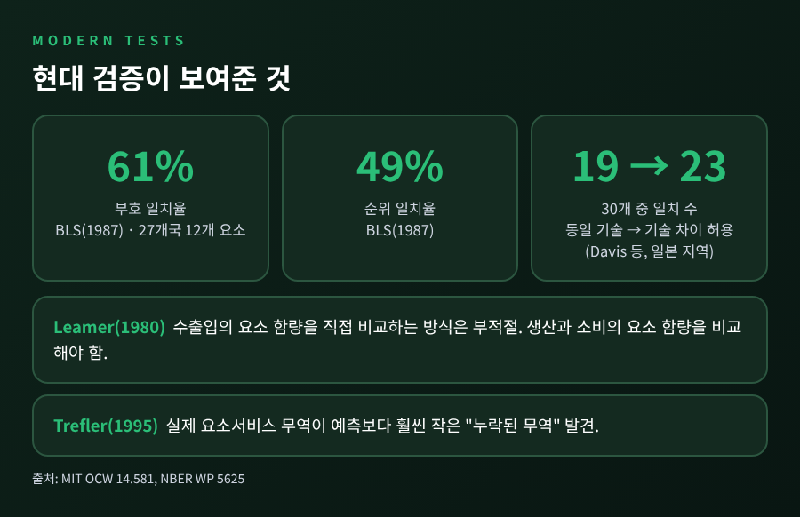

이번 글에서는 헥셔-올린 정리와 리온티예프의 역설을 정리해 보겠습니다.
결론부터 말씀드리면 이렇습니다. 1947년 미국 자료로 검증했더니 수입품이 수출품보다 1인당 자본을 약 1.3배 더 쓰는 것으로 나왔고, 이 결과는 이론이 틀렸다기보다 이론의 가정이 너무 단순했다는 쪽으로 해석이 모아졌습니다.
그 과정에서 인적자본, 기술 격차, 수요 편향, 측정 방법의 문제가 차례로 논의되었습니다.
헥셔-올린 정리는 한 나라가 무엇을 수출하는지를 그 나라가 가진 생산요소로 설명합니다.
1919년 Eli Heckscher의 논문이 출발점이었고, 제자 Bertil Ohlin이 1933년 《Interregional and International Trade》로 이를 발전시켰습니다. Ohlin은 1977년 노벨 경제학상을 공동 수상했습니다.
논리는 단순합니다. 재화는 노동, 자본, 토지보다 옮기기 쉽습니다. 그래서 각국은 자국에 상대적으로 풍부한 요소를 많이 쓰는 재화를 만들어 수출하고, 희소한 요소를 많이 쓰는 재화는 수입합니다.
자본이 풍부한 나라라면 자본집약재를 수출하고 노동집약재를 수입한다는 뜻입니다.
표준 모형은 몇 가지 가정 위에 서 있습니다.
2개국, 2개 재화, 2개 생산요소입니다. 두 나라의 생산기술은 같습니다. 재화마다 요소를 쓰는 비율이 다르고, 나라마다 요소의 상대적 부존량이 다릅니다. 시장은 완전경쟁입니다.
여기에 세 가지 정리가 따라붙습니다.
비교우위라는 말은 두 이론에 모두 쓰입니다. 그러나 비교우위가 어디서 생기는지에 대한 답이 다릅니다.
리카도식 모형은 나라 사이의 기술 차이를 원인으로 봅니다. 헥셔-올린은 반대로 기술이 같다고 두고, 요소부존의 차이만으로 비교우위를 설명합니다.
기술이 같다는 가정은 이론을 깔끔하게 만들어 줍니다. 대신 현실과 부딪힐 때 가장 먼저 의심받는 대목이기도 합니다. 이 점을 기억해 두시면 뒤의 논쟁이 훨씬 잘 보입니다.
Wassily Leontief는 이 이론을 숫자로 시험했습니다. 1953년 발표한 논문에서 그는 1947년 미국 산업연관표를 사용했습니다.
200개 산업 표를 38개 복합 부문으로 묶었고, 자본과 노동 계수는 하버드 경제연구 프로젝트의 자료를 썼습니다. 수출 합계는 약 166억 8천만 달러, 수입과 경쟁하는 국내 생산(수입대체) 합계는 약 61억 8천만 달러였습니다.
질문은 하나였습니다. 미국의 수출품 100만 달러어치와 수입대체품 100만 달러어치를 만들려면 자본과 노동이 각각 얼마나 들어가는가.
미국은 당시 세계에서 가장 자본이 풍부한 나라로 여겨졌습니다. 이론대로라면 수출품 쪽이 더 자본집약적이어야 했습니다.
결과는 정반대였습니다.
노동자 1인당 자본으로 환산하면 수출은 약 1만 4,000달러, 수입대체는 약 1만 8,200달러입니다. 수입대체품의 자본-노동비가 수출품의 약 1.3배였습니다.
참고로 자료마다 수출의 1인당 자본액이 1만 3,700달러에서 1만 4,300달러까지 조금씩 달리 적혀 있습니다. 반올림과 계산 방식의 차이로 보이며, 방향과 1.3배라는 비율은 모든 자료에서 같습니다.

리온티예프 본인은 이 결과를 이렇게 읽었습니다. 미국 노동자 1인이 외국 노동자 3명분에 해당한다고 가정해 보면, 미국은 자본이 넘치는 나라가 아니라 사실상 노동이 풍부하고 자본이 부족한 나라가 됩니다. 미국의 강점은 자본의 양이 아니라 노동생산성에서 나온다는 해석이었습니다.
다만 3배라는 숫자는 가설적인 예시였습니다. 후속 조사에서 실제 생산성 격차는 20~25% 정도로 보고되어, 이것만으로는 충분한 설명이 되지 못했습니다.
역설은 한 번의 우연이 아니었는지 다시 확인하는 작업이 이어졌습니다.
한 강의 자료에 따르면 1951년 자료로 다시 계산했을 때 수입은 수출보다 약 6% 더 자본집약적이었습니다. 격차는 줄었지만 방향은 같았습니다.
1971년 Baldwin은 1962년 무역 자료로 같은 검증을 했고, 수입이 수출보다 27% 더 자본집약적이라는 결과를 얻었습니다. 1947년의 특수성만으로는 설명하기 어렵다는 뜻이었습니다.
Baldwin은 여기서 한 걸음 더 나아갔습니다. 천연자원 산업을 빼자 비율이 1.04로 내려와 역설이 거의 사라졌고, 천연자원과 인적자본을 함께 고려하자 0.97까지 내려갔다고 한 논문은 정리합니다.
다만 이 해석에는 이견이 있습니다. 인적자본을 고려해도 역설이 줄어들 뿐 완전히 풀리지는 않았다고 보는 정리도 있습니다. 어느 쪽이 맞는지 단정하기는 어렵습니다.

설명은 크게 다섯 갈래로 나뉩니다.
첫째, 인적자본입니다.
Kenen(1965)은 물적자본에 인적자본을 더하면 역설이 뒤집힌다고 보았습니다. 1957년 기준 노동에 대한 투자가 약 8,800억 달러로 물적자본의 약 3분의 2에 달했다고 합니다. Keesing(1966)은 미국 수출이 가장 숙련집약적이라고 보고했습니다.
다만 Kenen의 결과는 할인율을 9%로 두었을 때 나온 것이어서 가정에 민감합니다.
둘째, 기술 격차입니다.
헥셔-올린은 기술이 같다고 가정하지만 현실은 그렇지 않습니다. Trefler(1993)는 나라와 요소별로 생산성 차이를 조정해 모형이 자료에 맞도록 했고, 그렇게 구한 생산성 격차는 임금과 자본수익률의 국가 간 차이와 서로 연관되었습니다. 리온티예프가 직접 제안한 방향이기도 합니다.
셋째, 수요 편향입니다.
미국인의 소비가 자본집약재 쪽으로 기울었다면 수입이 자본집약적으로 보일 수 있다는 주장이 있었습니다. 그러나 국가 간 수요 패턴이 비슷하다는 연구가 있고, 설사 편향이 있더라도 오히려 헥셔-올린의 예측을 강화하는 방향이라는 반론이 따릅니다.
린더 가설은 결이 다릅니다. 수요 구조가 비슷한 나라끼리 더 많이 교역하므로 수요가 비교우위보다 중요하다는 것입니다. 미국과 독일이 서로 다른 자동차 브랜드를 사고파는 모습이 대표적인 예로 꼽힙니다.
넷째, 천연자원과 토지입니다.
토지를 무시했고 농산물 수출은 토지와 노동을 많이 쓸 수 있다는 지적이 있습니다. Vanek은 천연자원과 자본이 보완 관계여서 자원집약 수입재에 간접적으로 자본이 들어 있다고 보았습니다. 반면 Baldwin은 자원만으로는 충분하지 않다고 결론지었고, 미국이 자원 부족국이라는 주장은 증거가 뒷받침하지 못했다는 평가도 있습니다.
다섯째, 1947년이라는 해 자체와 무역수지입니다.
전후 2년밖에 지나지 않아 통상적인 해가 아니었다는 지적이 있습니다. 당시 미국은 국민소득의 5% 이상에 달하는 무역흑자를 냈는데, Casas와 Choi는 무역이 균형이라고 가정하고 다시 계산하면 수출이 1인당 약 1만 2,338달러, 수입이 약 1만 1,231달러로 수출이 더 자본집약적이 되어 헥셔-올린과 일치한다고 보고했습니다.
반대로 설명이 약한 갈래도 있습니다. 요소집약도 역전은 Jones와 Robinson이 제기했으나 현실에서는 드문 현상으로 평가됩니다. 관세와 운송비는 무역량을 줄일 뿐 패턴을 뒤집을 정도는 아니라는 것이 Baldwin의 판단이었습니다.
더 근본적인 비판은 검증 방법을 향했습니다.
Edward Leamer(1980)는 수출품과 수입품의 요소 함량을 같은 금액끼리 비교하는 리온티예프의 방식이 이론의 올바른 함의가 아니라고 지적했습니다.
무역이 균형이 아니거나 요소가 둘을 넘으면, 한 나라가 자본과 노동 서비스를 동시에 순수출할 수 있습니다. 1947년 미국이 실제로 그랬다는 것입니다. 올바른 검증은 풍부한 요소에서 생산의 요소 함량이 소비의 요소 함량을 웃도는지를 보는 것입니다.
예전에는 수출과 수입을 나란히 놓고 비교하면 충분하다고 보았습니다. 지금은 생산과 소비의 요소 함량을 비교하는 것이 이론에 맞는 방식이라고 봅니다.
이후의 검증도 낙관적이지는 않았습니다.
Bowen, Leamer, Sveikauskas(1987)는 27개국 12개 요소로 검증했는데 예측과 실제의 부호가 일치한 비율은 61%, 순위가 일치한 비율은 49%에 그쳤습니다.
Trefler(1995)는 측정된 요소서비스의 순무역이 이론이 예측하는 것보다 훨씬 작아 0에 가깝다는 점을 발견하고 이를 "누락된 무역"이라 불렀습니다. 그가 선호한 설명은 기술의 중립적 차이와 소비의 자국 편향이었습니다.
일본 지역 자료를 쓴 Davis 등의 연구는 동일 기술 가정에서는 30개 중 19개가 맞았지만 기술 차이를 허용하면 23개가 맞는다고 보고하며, 누락된 무역의 상당 부분이 동일 기술 가정에서 비롯된다고 결론지었습니다.

정리하면 이렇습니다.
리온티예프의 검증은 헥셔-올린을 무너뜨리지 않았습니다. 대신 이론이 어디까지 맞고 어디서부터 틀리는지를 묻게 만들었습니다.
세분화된 다요소 모형에서는 역설이 사라진다는 평가가 있고, 한 논문은 이 문제를 사실상 닫힌 책이라고 부르기도 했습니다. 이 논쟁은 규모의 경제와 불완전경쟁에 주목하는 신무역이론으로 이어졌고, 산업내무역은 세계 무역의 약 4분의 1을 차지하는 것으로 정리됩니다.
물론 한계는 남습니다. 인적자본의 효과는 가정에 따라 달라지고, 기술 차이는 직접 관측된 것이 아니라 추정된 것이 많습니다. 완전한 합의에 이르렀다고 말하기는 어렵습니다.
끝으로 한 마디만 덧붙이겠습니다.
"자본이 많다는 것과 자본집약재를 수출한다는 것은 같은 말이 아니다."
미국의 수출품에는 기계와 공장뿐 아니라 사람의 숙련과 기술이 함께 실려 있었던 셈입니다. 이론이 틀렸는지 묻기 전에, 우리가 부존을 제대로 세고 있었는지를 되묻게 되는 이유입니다.
출처: Leontief(1953) 원문 사본, Iowa State Univ. Econ 355 강의자료, Wikipedia, MIT OpenCourseWare 14.581, NBER Working Paper 5625, New Palgrave 항목, Econlib, Feenstra & Taylor, Smyth(1997), Saylor Academy